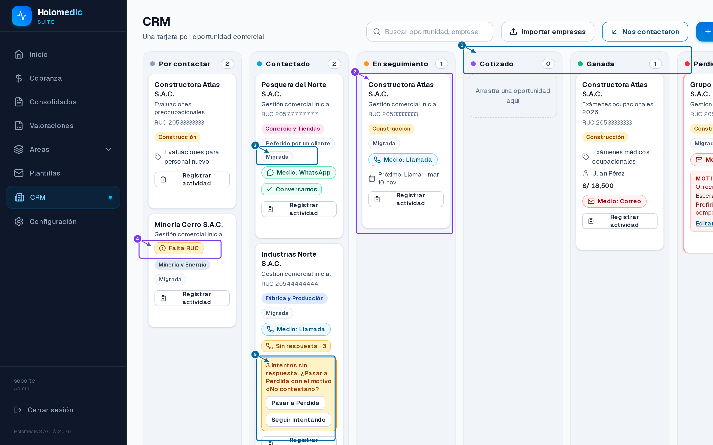
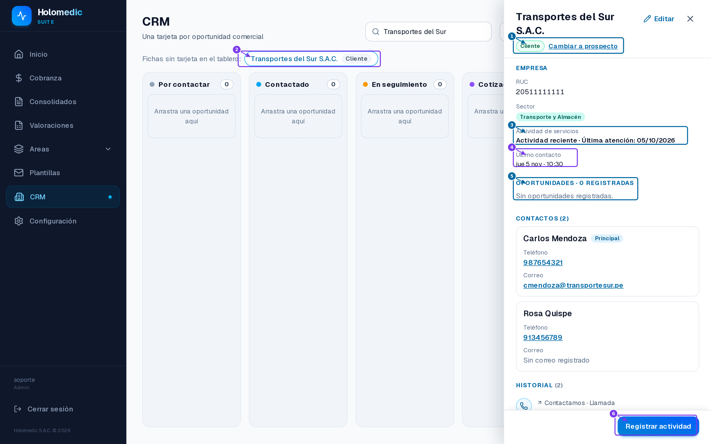
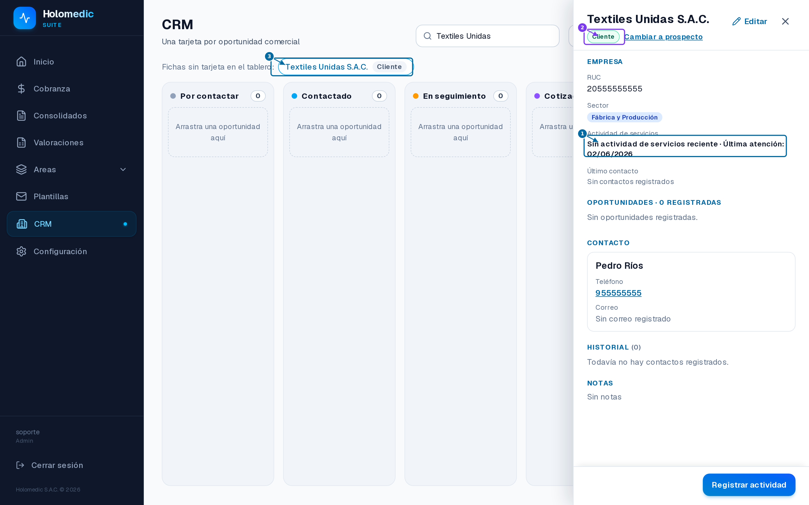
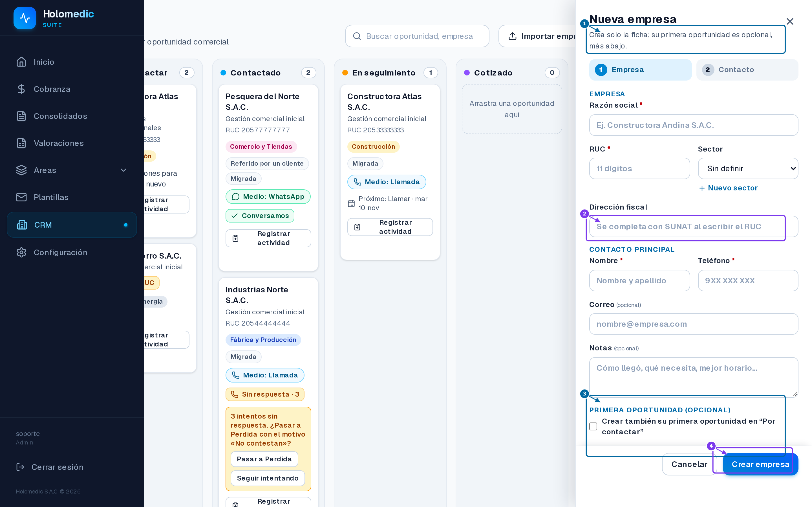
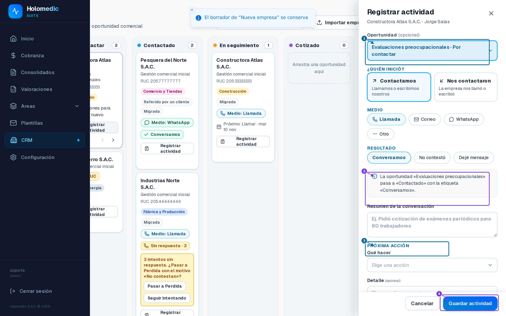
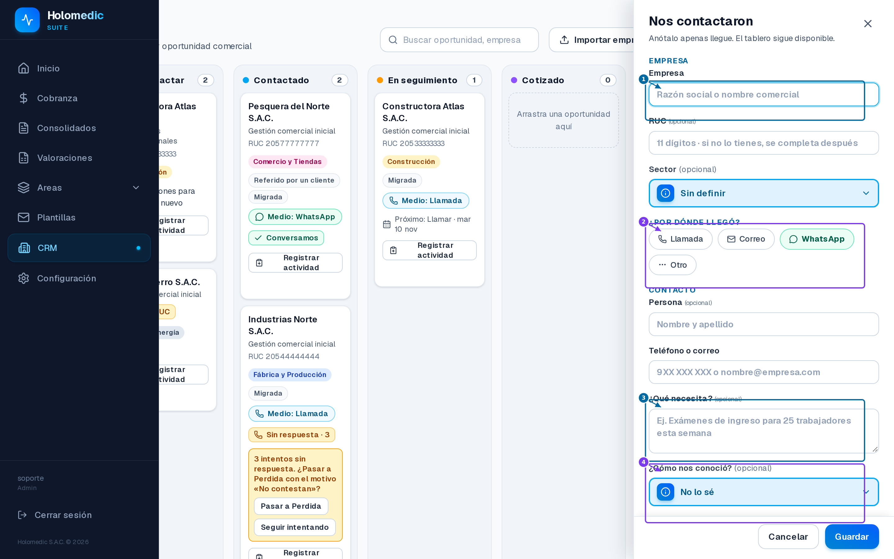
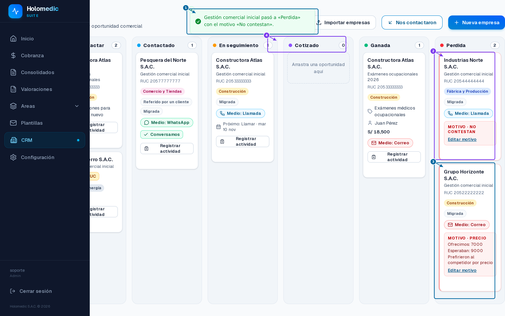

0 · Recorrido con capturas (app corriendo con datos demo)
Capturas reales de pnpm start sobre la BD demo migrada (contenedor SQL Server local): datos antiguos migrados con la regla S8, SIGLA falsa con atenciones reales y usuario con permiso crm. Cada imagen lleva recuadros numerados; la leyenda está debajo.

- 1. Columnas nuevas: «Cotizado» y «Ganada». «Cliente» salió del tablero: ahora es la relación de la empresa.
- 2. Cada tarjeta es UNA oportunidad: empresa + negocio + responsable + monto.
- 3. Chip «Migrada»: negocios creados por la migración de datos (S8).
- 4. «Falta RUC» con consulta SUNAT en la propia tarjeta.
- 5. Sugerencia automática tras 3 intentos sin respuesta: «Pasar a Perdida» pide el motivo; la empresa no se toca.
Nota: las empresas cliente sin oportunidades no aparecen en el tablero por diseño — se abren por el buscador (ver captura 02).

- 1. Relación de la empresa con toggle manual: ganar o perder un negocio nunca la cambia.
- 2. Los clientes sin tarjeta se abren desde el buscador (Caso 2: abrir la ficha y crear una nueva oportunidad).
- 3. Actividad de servicios leída EN VIVO de SIGLA: «Actividad reciente · Última atención: 05/10/2026». Una llamada reciente no la altera.
- 4. Último contacto comercial (llamadas/correos), separado de la atención de servicios.
- 5. Oportunidades · N registradas: todos los negocios, abiertos, ganados o perdidos.
- 6. «Registrar actividad»: puede vincularse a un negocio específico o quedar general.

- 1. «Sin actividad de servicios reciente · Última atención: 02/06/2026»: la inactividad se calcula por SERVICIOS (4 meses), no por llamadas.
- 2. Sigue siendo CLIENTE: la inactividad no la convierte en prospecto ni en perdida (Caso 3).
- 3. Su ficha se abre por el buscador aunque no tenga negocios en el tablero.

- 1. «Nueva empresa» crea SOLO la ficha: nunca obliga a crear una oportunidad (S7.1).
- 2. Dirección fiscal se autocompleta con SUNAT al tipear el RUC.
- 3. «Primera oportunidad (opcional)»: si se marca, crea la ficha + su primer negocio en el mismo flujo (con reintento si falla el segundo paso).
- 4. Un clic: la empresa queda como ficha permanente (Prospecto por defecto).

- 1. «Registrar actividad» (antes Registrar contacto): permite vincularla a una oportunidad concreta o dejarla general.
- 2. La actividad avanza SOLO el negocio vinculado: «Evaluaciones preocupacionales» pasa a Contactado.
- 3. Próxima acción: exigida en negocios abiertos vinculados; opcional en actividades generales.
- 4. La ficha y el historial de la empresa registran la actividad con su vínculo.

- 1. Primero BUSCA la empresa: si ya existe crea una oportunidad vinculada; si no, registra la ficha + su primera oportunidad (sin duplicar).
- 2. El medio de llegada queda registrado en la actividad y en el negocio.
- 3. «¿Qué necesita?» se convierte en el nombre de la primera oportunidad de la empresa.
- 4. El origen («¿Cómo nos conoció?») vive ahora en la oportunidad.

- 1. Al pasar a Perdida se solicita el motivo y SOLO se cierra esa oportunidad (Caso 1).
- 2. Industrias Norte queda en Perdida con su motivo registrado y editable; su historial se conserva.
- 3. Grupo Horizonte (migrada): el motivo del rechazo antiguo (precio, ofrecimos 7000 / esperaban 9000) se preservó en la migración.
- 4. Las demás oportunidades y la empresa no se modifican.
1 · El problema y la corrección
Antes
La etapa de la empresa (Por contactar → Contactado → En seguimiento → Cliente / Perdido) era al mismo tiempo la empresa y el negocio: una sola tarjeta por organización en el embudo.
Ahora
La empresa es una ficha permanente con relación Prospecto/Cliente; el tablero muestra oportunidades (una empresa puede estar en varias columnas); las actividades pueden vincularse a un negocio o quedar generales.
Regla clave
Ganar o perder un negocio nunca cambia la relación de la empresa ni toca sus demás oportunidades. Un cliente sigue siendo cliente aunque esté inactivo en servicios.
2 · Tablero Kanban: 5 → 6 etapas
Antes (empresa = tarjeta)
"Cliente" era una etapa del embudo y no existía "Cotizado" ni "Ganada".
Ahora (oportunidad = tarjeta)
"Cliente" salió del tablero (es relación de la ficha); "Cotizado" distingue propuestas presentadas; "Ganada" es el resultado del negocio.
3 · Ficha de empresa (pantalla de consulta)
- Encabezado: razón social, RUC (con autocompletado SUNAT), sector y relación con toggle manual (
PATCH /api/crm/empresas/[id]/relacion) — nunca derivada de un resultado comercial. - Actividad de servicios — leída en vivo de SIGLA (
Cliente.NroRuc → Orden.CodCli → MAX(Orden.FecAte)): Sin información · Pendiente de primera atención · reciente · Sin actividad de servicios reciente (umbral 4 meses por servicios, no por llamadas; sin datos nunca se clasifica "inactiva"). - Último contacto y Oportunidades · N registradas (cada una con su etapa, medio editable y motivo si está perdida).
- Historial completo — toda actividad, abierta/ganada/perdida, indicando el negocio vinculado o «General».
4 · Flujos adaptados (los botones que los usuarios ya conocen)
| Acción | Nuevo comportamiento |
|---|---|
| Nueva empresa | Crea la ficha sin oportunidad obligatoria + sección opcional «Primera oportunidad» en el mismo formulario (con recuperación: si el segundo POST falla, la ficha queda y se reintenta solo el negocio). |
| Nos contactaron | Busca la empresa; si existe crea una nueva oportunidad vinculada; si no, registra empresa + primera oportunidad (respuesta {empresa, oportunidad, existente}). |
| Registrar actividad | Antes «Registrar contacto»; selector opcional de negocio; la próxima acción solo es exigida en negocios abiertos vinculados. |
| Mover tarjeta | Mueve una oportunidad; a Perdida exige motivo (diálogo), a Contactado exige medio, Ganada no pide nada; actualización en el lugar sin refetch. |
| Importar empresas | Crea/actualiza solo fichas, sin oportunidades automáticas. |
5 · Migración de datos (decisión registrada)
- Etapas abiertas → oportunidad con la misma etapa + próxima acción y origen copiados.
perdido→ oportunidad Perdida conservando el motivo (el rechazo no se pierde).cliente→ solorelacion='cliente', sin tarjeta sintética.- Todo lo migrado lleva
migrada = 1y nombre «Gestión comercial inicial»; historial y contactos intactos. - Batch idempotente autoejecutado en el primer request (
sp_getapplock, guards porsys.*), 14 columnas de la era-etapa retiradas con barrido dinámico por dependencias.
EXEC('...' + QUOTENAME()) es T-SQL inválido y su error de compilación no aborta el batch externo — el barrido no eliminaba nada y DROP COLUMN fallaba. Corregido (statement en variable + sys.sql_expression_dependencies), pineado y re-ensayado 2/2 verde.6 · Los 3 modelos de datos
Empresa
dbo.CrmEmpresa + CrmContacto — ficha permanente: razón social, RUC único, sector, contactos (uno principal), notas, dirección, relacion. Sin etapa: la ficha no se mueve.
Oportunidad
dbo.CrmOportunidad — nombre, empresa, responsable (id + snapshot), origen, servicio de interés, etapa, monto estimado, próxima acción, motivo (solo Perdida), intentos, sugerencia, migrada.
Actividad
dbo.CrmInteraccion + idOportunidad (NULL = general) — dirección, medio, resultado, resumen; avanza solo el negocio vinculado.
7 · Commits (10)
| Commit | Unidad | Verificación |
|---|---|---|
4467542 | T1+T3 · Dominio nuevo + adapter SIGLA (SqlServerAtencionesRepository) | 4/4 tests + sondeo real SIGLA |
0459f08 | T2 · Esquema SQL + migración + repositorios | 87/87 |
4bfb209 | Fix del barrido de constraints (hallado en ensayo) | Ensayo contenedor 2/2 + pin |
b50de28 | T4 · Casos de uso (+ fix S6.7 pendiente_primera) | 252/252 |
9c21a5b | T5 · API (9 rutas nuevas, 4 removidas) | 224/224 |
77901a1 | T6 · Kanban por oportunidades | 87/87 |
2b49a2e | T7 · Ficha de empresa permanente | 117/117 + diferencial 94/94 |
4e8789a | T8 · Flujos (alta/entrante/actividad/día/calendario) | 193/193 + diferencial 220/220 |
3bebf02 | T9+T10 · 7 validaciones + docs + pins corregidos | 1058/1058 (suite completa) |
8 · Las 7 validaciones del documento — todas cubiertas
| # | Comprobación | Prueba de aceptación |
|---|---|---|
| 1 | Crear empresa sin oportunidad obligatoria | validacionesDocumento.test.ts + suites de alta |
| 2 | Dos oportunidades para una misma empresa | ídem + crearOportunidad.test |
| 3 | Perder una oportunidad sin cambiar la empresa | ídem + moverOportunidad.test |
| 4 | Actividad vinculada a un negocio específico | ídem + registrarActividad.test + UI |
| 5 | Consultar todas las actividades desde la ficha | ídem + historial API + UI (vinculadas y generales) |
| 6 | Ganar sin alterar otras negociaciones abiertas | ídem + moverOportunidad.test |
| 7 | Cliente inactivo sin volverlo prospecto/perdido | ídem + consultarAtencion.test (SIGLA, 4 estados) |
9 · Verificación global
Capas verificadas: dominio · aplicación (252) · infraestructura SQL (87) · API (224) · presentación tablero (87) · ficha (117) · flujos (193) · aceptación (7). La revisión nativa (RDD) quedó en medio/unassessable — sin candidato: la autoverificación sostiene la entrega.
develop, luego master según el flujo del repo, y sync al SDK de Windows (.\sync-sdk.ps1) después del merge. La migración corre automáticamente en el primer request del CRM tras el despliegue (batch idempotente, ensayado).